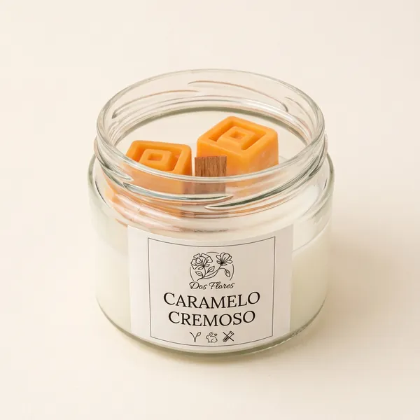
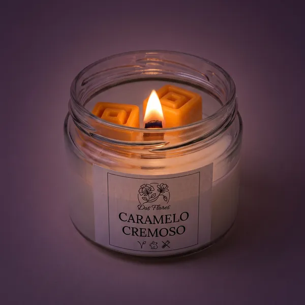

Edición limitada
Porciones de cera aromática sin mecha que se derriten en un quemador adecuado para perfumar la estancia.
Próximamente
Si quieres que te avisemos cuando estén listos, escríbenos.
Consultar por Instagram